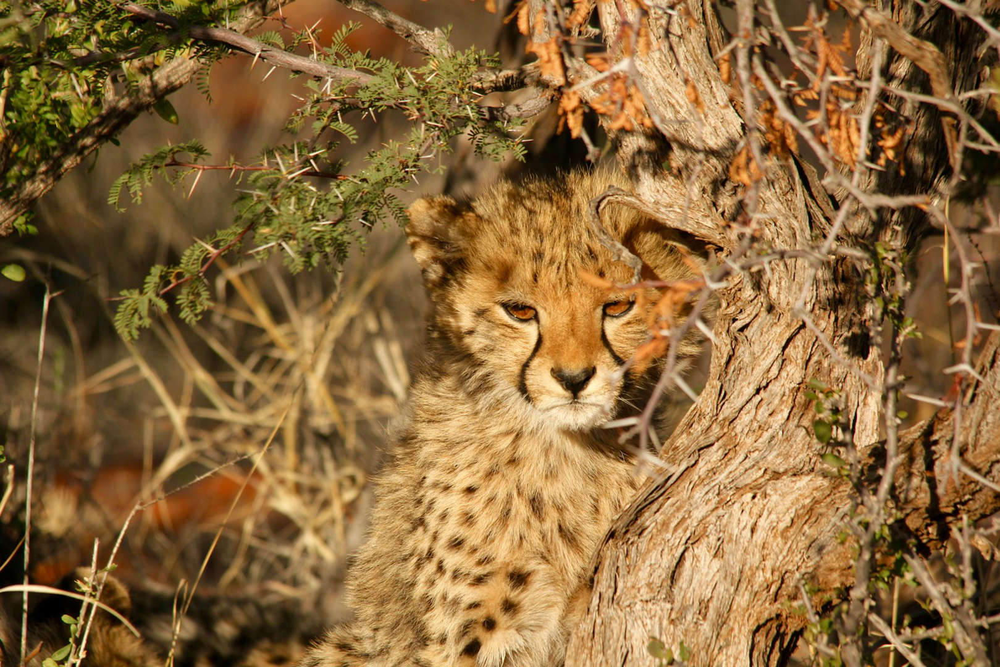

Big Cats

# Big cats, majestic and captivating creatures that have enthralled humans for centuries, are facing unprecedented threats in the wild. Despite their and adaptability, several species and subspecies are teetering on the brink of extinction. This article explores 12 rare big cats that are critically endangered, illuminating the dire need for conservation efforts to preserve these magnificent animals for future generations.